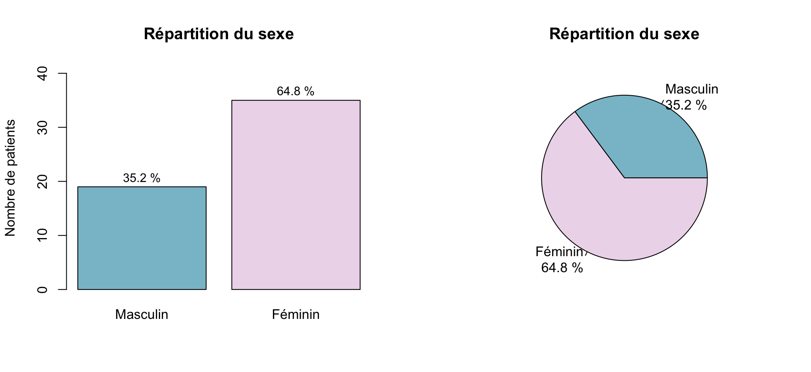
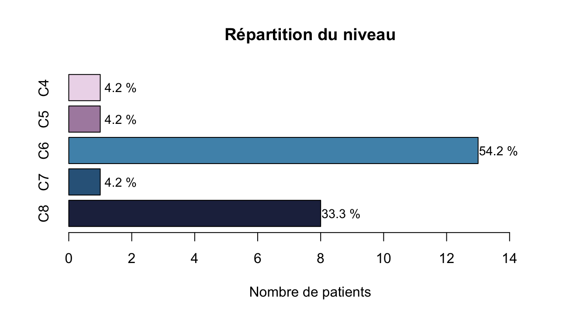

# Convertir les variables numériques
df$Age <- as.numeric(df$Age)
class(df$Age)Stats Thèse Brieuc
NoteOrigine de ce document
Ce document est au format Quarto Markdown (.qmd) : il contient du code R et est généré directement pour obtenir un rapport en PDF ou HTML.
Il est donc à la fois un document de travail pour moi, et à la fois un document de présentation des analyses. Je laisse donc volontairement les sections de code pour transparence et reproductibilité des analyses.
La préparation des données a été faite sur R plutôt que sur Excel pour éviter les erreurs et tracer les étapes. La première partie du document est donc consacrée à la préparation des données, avec des sections de code pour chaque variable (vous pouvez donc sauter les sections de code si vous ne souhaitez pas les détails de la préparation des données).
Je suis interne en chirurgie digestive à Paris et actuellement un master 2 en biostatistiques (“Méthodologie et Statistiques en Recherche biomédicale”, Université Paris Saclay). Et accessoirement, ami de Brieuc !
Le rapport est disponible en format HTML hébergé sur Github Pages, et aussi téléchargeable en PDF, DOCX et Quarto (.qmd), contenant le code R utilisé pour les analyses.
1 Import de la base et préparation des données
1.1 Dates
1.2 Variables numériques
1.3 Variables catégorielles
1.3.1 Sexe
# Convertir la variable "Sexe" en facteur
df$Sexe <- factor(c(M = "Masculin", F = "Féminin")[df$Sexe], levels = c("Masculin", "Féminin"))
table(df$Sexe, useNA = "ifany")1.3.2 Côté
# Convertir la variable "Côté" en facteur
df$Cote <- factor(
c(G = "Gauche", D = "Droite")[df$Cote],
levels = c("Gauche", "Droite")
)
table(df$Cote, useNA = "ifany")1.3.3 Niveau
# Convertir la variable "Niveau" en facteur ordonné
df$Niveau
df$Niveau <- factor(
df$Niveau,
levels = c("C4", "C5", "C6", "C7", "C8"),
ordered = TRUE
)
table(df$Niveau, useNA = "ifany")1.3.4 Examen clinique
str(df$Examen_Clinique)
class(df$Examen_Clinique)
unique(df$Examen_Clinique)
#création d'une variable binaire "Examen_Clinique_Binaire" (1 = Positif, 0 = Negatif ou Douteux)
df$Examen_Clinique_Positif_YN <- ifelse(df$Examen_Clinique == "Positif", 1, 0)
table(df$Examen_Clinique_Positif_YN, useNA = "ifany")
#création d'une variable binaire "Examen_Clinique_Douteux_YN" (1 = Douteux, 0 = Positif ou Negatif)
df$Examen_Clinique_Douteux_YN <- ifelse(df$Examen_Clinique == "Douteux", 1, 0)
table(df$Examen_Clinique_Douteux_YN, useNA = "ifany")1.3.5 IRM
str(df$IRM)
class(df$IRM)
unique(df$IRM)
#création d'une variable binaire "IRM_Positif_YN" (1 = Positif, 0 = Negatif ou Douteux)
df$IRM_Positif_YN <- ifelse(df$IRM == "Positif", 1, 0)
table(df$IRM_Positif_YN, useNA = "ifany")
#création d'une variable binaire "IRM_Douteux_YN" (1 = Douteux, 0 = Positif ou Negatif)
df$IRM_Douteux_YN <- ifelse(df$IRM == "Douteux", 1, 0)
table(df$IRM_Douteux_YN, useNA = "ifany")1.3.6 Infiltrations
str(df$Infiltrations)
class(df$Infiltrations)
unique(df$Infiltrations)
#modification infiltrations pour mettre 1 et 0
df$Infiltrations <- ifelse(df$Infiltrations == "oui", 1, ifelse(df$Infiltrations == "non", 0, NA))
table(df$Infiltrations, useNA = "ifany")1.3.7 Gold Standard
#création d'une variable binaire "Gold_Standard_Positif_YN" (1 = Positif, 0 = Negatif ou Douteux ou NA)
df$Gold_Standard_Positif_YN <- ifelse(df$Gold_Standard == "Positif", 1,
ifelse(df$Gold_Standard %in% c("Negatif", "Douteux"), 0, NA)
)
table(df$Gold_Standard_Positif_YN, useNA = "ifany")
#création d'une variable binaire "Gold_Standard_Douteux_YN" (1 = Douteux, 0 = Positif ou Negatif ou NA)
df$Gold_Standard_Douteux_YN <- ifelse(df$Gold_Standard == "Douteux", 1,
ifelse(df$Gold_Standard %in% c("Positif", "Negatif"), 0, NA)
)
table(df$Gold_Standard_Douteux_YN, useNA = "ifany")1.3.8 Tests cliniques évaluateur 1
Les variables sont transformées en numériques binaires (1 = Positif / 0 = Negatif) pour faciliter les tests.
1.3.8.1 U1_E1
str(df$U1_E1)
class(df$U1_E1)
table(df$U1_E1, useNA = "ifany")
#création d'une variable binaire "U1_E1_Positif_YN" (1 = Positif, 0 = Negatif ou NA)
df$U1_E1_positif <- as.numeric(df$U1_E1 == "Positif")
table(df$U1_E1_positif, useNA = "ifany")1.3.8.2 U2a_E1
str(df$U2a_E1)
class(df$U2a_E1)
table(df$U2a_E1, useNA = "ifany")
#création d'une variable binaire "U2a_E1_Positif_YN" (1 = Positif, 0 = Negatif ou NA)
df$U2a_E1_positif <- as.numeric(df$U2a_E1 == "Positif")
table(df$U2a_E1_positif, useNA = "ifany")1.3.8.3 U2b_E1
str(df$U2b_E1)
class(df$U2b_E1)
table(df$U2b_E1, useNA = "ifany")
#création d'une variable binaire "U2b_E1_Positif_YN" (1 = Positif, 0 = Negatif ou NA)
df$U2b_E1_positif <- as.numeric(df$U2b_E1 == "Positif")
table(df$U2b_E1_positif, useNA = "ifany")1.3.8.4 U3_E1
str(df$U3_E1)
class(df$U3_E1)
table(df$U3_E1, useNA = "ifany")
#création d'une variable binaire "U3_E1_Positif_YN" (1 = Positif, 0 = Negatif ou NA)
df$U3_E1_positif <- as.numeric(df$U3_E1 == "Positif")
table(df$U3_E1_positif, useNA = "ifany")1.3.8.5 Sc_E1
Il existe un “NT” dans Sc_E1, traité comme NA
str(df$Sc_E1)
class(df$Sc_E1)
table(df$Sc_E1, useNA = "ifany")
# conversion de "NT" en NA
df$Sc_E1 <- ifelse(df$Sc_E1 == "NT", NA, df$Sc_E1)
table(df$Sc_E1, useNA = "ifany")
#création d'une variable binaire "Sc_E1_Positif_YN" (1 = Positif, 0 = Negatif ou NA)
df$Sc_E1_positif <- as.numeric(df$Sc_E1 == "Positif")
table(df$Sc_E1_positif, useNA = "ifany")1.3.8.6 Gachette évaluateur 1
Renommage de la variable “Gachette” en “Gachette_E1” pour plus de clarté
# Renommage de la variable "Gachette" en "Gachette1"
names(df)[names(df) == "Gachette"] <- "Gachette1"
table(df$Gachette1, useNA = "ifany")
# transformation de la variable en factoriel non ordonné
df$Gachette1 <- factor(df$Gachette1, levels = c("paraspinal", "susclavier"))
table(df$Gachette1, useNA = "ifany")
class(df$Gachette1)1.3.8.7 Tests cliniques évaluateur 2
1.3.8.8 U1_E2
str(df$U1_E2)
class(df$U1_E2)
table(df$U1_E2, useNA = "ifany")
#transformation NT en NA
df$U1_E2 <- ifelse(df$U1_E2 == "NT", NA, df$U1_E2)
table(df$U1_E2, useNA = "ifany")
#création d'une variable binaire "U1_E2_Positif_YN" (1 = Positif, 0 = Negatif ou NA)
df$U1_E2_positif <- as.numeric(df$U1_E2 == "Positif")
table(df$U1_E2_positif, useNA = "ifany")1.3.8.9 U2a_E2
str(df$U2a_E2)
class(df$U2a_E2)
table(df$U2a_E2, useNA = "ifany")
#transformation NT en NA
df$U2a_E2 <- ifelse(df$U2a_E2 == "NT", NA, df$U2a_E2)
table(df$U2a_E2, useNA = "ifany")
#création d'une variable binaire "U2a_E2_Positif_YN" (1 = Positif, 0 = Negatif ou NA)
df$U2a_E2_positif <- as.numeric(df$U2a_E2 == "Positif")
table(df$U2a_E2_positif, useNA = "ifany")1.3.8.10 U2b_E2
str(df$U2b_E2)
class(df$U2b_E2)
table(df$U2b_E2, useNA = "ifany")
#transformation NT en NA
df$U2b_E2 <- ifelse(df$U2b_E2 == "NT", NA, df$U2b_E2)
table(df$U2b_E2, useNA = "ifany")
#création d'une variable binaire "U2b_E2_Positif_YN" (1 = Positif, 0 = Negatif ou NA)
df$U2b_E2_positif <- as.numeric(df$U2b_E2 == "Positif")
table(df$U2b_E2_positif, useNA = "ifany")1.3.8.11 U3_E2
str(df$U3_E2)
class(df$U3_E2)
table(df$U3_E2, useNA = "ifany")
#transformation NT en NA
df$U3_E2 <- ifelse(df$U3_E2 == "NT", NA, df$U3_E2)
table(df$U3_E2, useNA = "ifany")
#création d'une variable binaire "U3_E2_Positif_YN" (1 = Positif, 0 = Negatif ou NA)
df$U3_E2_positif <- as.numeric(df$U3_E2 == "Positif")
table(df$U3_E2_positif, useNA = "ifany")1.3.8.12 Sc_E2
str(df$Sc_E2)
class(df$Sc_E2)
table(df$Sc_E2, useNA = "ifany")
#transformation NT en NA
df$Sc_E2 <- ifelse(df$Sc_E2 == "NT", NA, df$Sc_E2)
table(df$Sc_E2, useNA = "ifany")
#création d'une variable binaire "Sc_E2_Positif_YN" (1 = Positif, 0 = Negatif ou NA)
df$Sc_E2_positif <- as.numeric(df$Sc_E2 == "Positif")
table(df$Sc_E2_positif, useNA = "ifany")2 Introduction
4 tests ULNT (Upper Limb Neurodynamic Tests) : ULNT1, ULNT2a, ULNT2b, ULNT3
Qu’il faut comparer à deux gold standards :
Gold standard 1 : diagnostic d’une névralgie cervico-brachiale par examen clinique + IRM et consensus entre 2 orthopédistes seniors
Gold standard 2 : diagnostic d’une névralgie cervico-brachiale par examen clinique + IRM par un orthopédiste senior + résultat positif à une infiltration et/ou geste chirurgical
Objectif : Évaluation de la performance diagnostique, par rapport au gold standard, des ULNT et du Scratch Collapse Test pour le le diagnostic des névralgies cervicobrachiales en consultation de chir ortho.
3 Résultats
3.1 Caractéristiques initiales de la population
- Variables disponibles : Âge (
df$Age), Sexe (df$Sexe), Côté (df$Cote), Niveau (df$Niveau)
3.1.1 Âge
| Min. | 1st Qu. | Median | Mean | 3rd Qu. | Max. |
|---|---|---|---|---|---|
| 27 | 42.75 | 51 | 52.64815 | 58.75 | 125 |
Un patient a 125 ans.
Pour l’instant, la médiane de la population lui est attribuée.
#| label: âge corrigé
#| echo: true
#| include: true
#| results: "hide"
# Remplacer l'âge de 125 ans par la médiane des âges
age_median <- median(df$Age, na.rm = TRUE)
df$Age <- ifelse(df$Age == 125, age_median, df$Age)- Représentation de la variable âge après correction par histogramme avec densité et QQ-plot (le QQ plot se construit en comparant les quantiles de la variable âge à ceux d’une distribution normale théorique : si les points suivent une ligne droite, la variable suit une distribution normale).

- L’âge semble suivre une distribution approximativement normale. Les tests statistiques de normalité (type Shapiro-Wilk) n’ont pas d’intérêt dans cette situation (permet uniquement de rejeter l’hypothèse de normalité si les données s’en écartent assez pour que le test ait la puissance nécessaire, or il n’y aura pas la puissance nécessaire avec seulement 50 patients).
3.1.2 Sexe
- Représentation de la variable sexe par un diagramme en barres et par un camembert (pie chart)

- Même si le camembert est plus visuel, le diagramme en barres est plus précis pour comparer les effectifs et les proportions (car affiche les effectifs totaux).
3.1.2.1 Côté
- Représentation de la variable côté par un diagramme en barres et par un camembert (pie chart)

3.1.2.2 Niveau
- Représentation de la variable niveau par un diagramme en barres et par un camembert (pie chart)

3.1.2.3 Tableau de caractéristiques initiales
# création tableau de caractéristiques initiales avec tbl_summary
cols_carac <- c("Age", "Sexe", "Cote", "Niveau")
tbl_carac <- df %>%
tbl_summary(
include = all_of(cols_carac),
statistic = list(
all_continuous() ~ "{median} ({sd})",
all_categorical() ~ "{n} ({p}%)"
),
digits = all_continuous() ~ 1
) %>%
modify_header(label = "**Caractéristiques initiales**")
# affichage du tableau
tbl_carac| Caractéristiques initiales | N = 541 |
|---|---|
| Age | 51.0 (12.3) |
| Sexe | |
| Masculin | 19 (35%) |
| Féminin | 35 (65%) |
| Cote | |
| Gauche | 25 (54%) |
| Droite | 21 (46%) |
| Unknown | 8 |
| Niveau | |
| C4 | 1 (4.2%) |
| C5 | 1 (4.2%) |
| C6 | 13 (54%) |
| C7 | 1 (4.2%) |
| C8 | 8 (33%) |
| Unknown | 30 |
| 1 Median (SD); n (%) | |